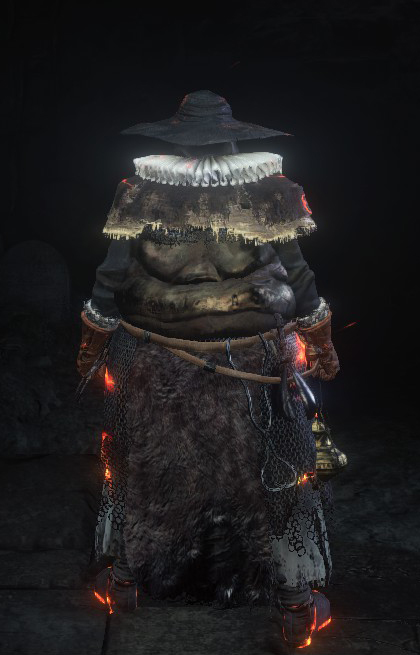
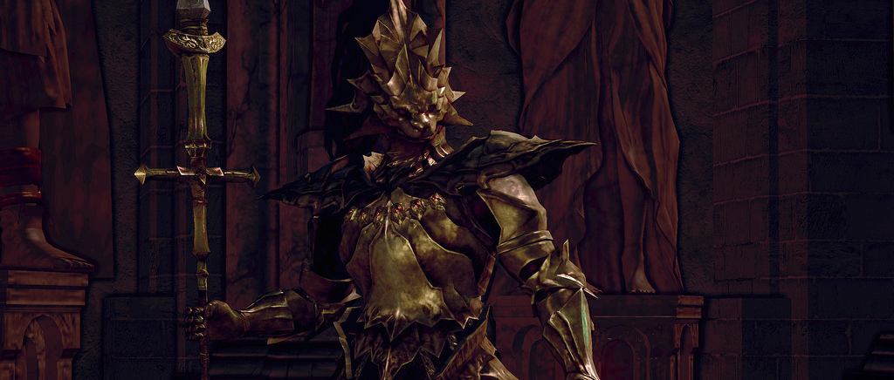

Echoes From Firelink
A simplisitc fan made Dark Souls 3 resource site
Easter Eggs

At the Cemetary of Ash, you pick up the Ashen Estus Flask from the corpse of what appears to be Oscar of Astora, the character who gave you the Estus Flask in the first Dark Souls. In the past he was barely alive but still gave you his last estus. In this game however, he only had ashen estus left and was sadly unable to keep himself alive.
Next to the bonfire in Profaned Capital you can find the corpse of Laddersmith Gilligan from Dark Souls 2, probably dead from the strain of smithing all the insanely long ladders in this game.
In the Demon Ruins, Quelana's corpse can be found holding her pyromancy tome, leaned against a giant spider which is probably the White Queen or Quelaag. It is unknown if the duo passed together or separately.
The Evangelist seems to be extremely similar to Demon's Souls Fat Officials. Their attire is similar, they both have dialogue, and they both use pyromancies.
Inside a cave in the poison swamp of Farron Keep, near the Farron Keep Perimeter bonfire, there's a dead mushroom that resemble Elizabeth from the Oolacille Sanctuary. In front of the mushroom is a corpse clutching the Golden Scroll, which contains most of the sorceries that Elizabeth taught. There's also a chest there containing Dusk's dress, the Antiquated Set. Dusk and Elizabeth are closely connected characters from the first Dark Souls.
The Old Wolf of Farron is most likely a reference to Sif, the Great Grey Wolf. It is lying in front of a large gravestone, reminiscent of the graveyard in Darkroot Garden. Ranking up in the covenant also grants the Wolf Ring and Wolf Knight's Greatshield, both prior possessions of Artorias.
Havel's weapon and gear can be found in the Archdragon peak. His armor can be found on a corpse in Farron Keep near the Stray Demon once his revenant is defeated.
Dragonslayer Ornstein's weapon and armor can be picked up off of the floor near the Nameless King boss fight. His armor describes that Ornstein was looking for him and it can be assumed that his armor was either put down or abandoned without conflict as there is no corpse accompanying them.
Gastly figures are seen roaming near Central Irithyll in a similar manner to how the Black Knights roamed the Kiln of the First Flame in the original Dark Souls
The Fire Keeper is very reminiscent of the Maiden in Black from Demon's Souls. Both wander the hub area, level you up, talk while in the menu, and lack eyes.
The Giant Blacksmith's corpse can be found in Anor Londo. We can assume that he died smithing as he is in the same position. Luckily Andre, also hailing from the original game, is still alive and well.